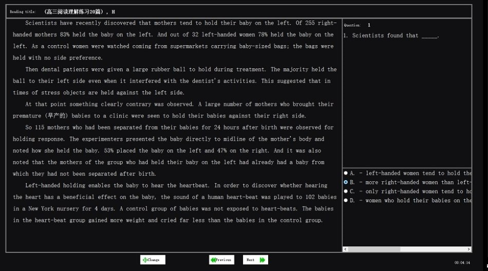
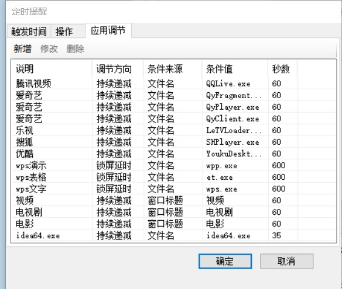

量身定做的，都是最好的
黑狼语录：
—— 方小玉在购物时有一个观点是：量身定做的，都是最好的。
—— Dragonfly（蜻蜓）是我为方小玉量身定做的一款软件，欢迎大家使用。
昨晚，方小玉暴跳如雷地向我诉苦：“我本来想用一会儿电脑，刚打开不到一分钟，电脑屏幕锁定了，锁定两个小时！两个小时后，都到晚上 9 点了，打开电脑又不到一分钟，又锁定了，还要锁两个小时！你的程序出了这么严重的 bug，非常严重，赶紧卸载掉！我受不了了！”
我非常愕然，软件之前出现过几次 Bug（错误），但是不可能出现她描述的这个 Bug 呀。
忽然，我很想笑，就开始笑了起来，笑声越来越大，直到我肚子笑疼了还是止不住。方小玉被我感染地哈哈大笑了起来，笑到后来，忘了她的暴跳如雷，也忘了她发现的 Bug。
事情的起因，还要从那款我为方小玉量身定做的软件说起。
自从年初放松了对方小玉的经济管制后，一下子如滔滔江水一发不可收拾。她买了 290 元的铅笔袋，买了几套喜欢的书，买了一款 win10 的平板电脑。她还想要买那款将近 1000 元的运动鞋，以及 iPhone 手机和 iPad 平板。
我的态度转变很大，现在是既不阻止，也不支持。偶尔我会忍不住找她“谈谈心”，比如那款笔袋看着和天意商城 15 元的没啥区别，这些书如果简装的话会节省好多，iPad 就是游戏机肯定不如平板电脑好用，外卖哪有家里做的饭菜卫生，等，但，她基本都当作了耳旁风。
她觉得手中的钱有点不够花了，要求我每月给她 100 元零花钱，支付方式限定为微信转账。她答应去公园陪我跑步锻炼，条件是每次陪练费用是 80 元。一个月后，连她自己都笑着说，最近挣起钱来爽快多了。
旧的烦恼刚刚结束，又迎来了新的烦恼。
她在 2 月份的时候，每天花大量的时间在电脑上，热衷于各种电视连续剧，胡有理忍无可忍，几次提出，让我开发一款软件来限制她使用电脑。
迫在眉睫，我本身是做软件开发工作的，于是放弃休息，利用业余时间，终于赶制出来一款简单的软件。
软件命名为Dragonfly（蜻蜓），取其轻盈轻巧、蜻蜓点水之意。功能很简单，每隔 60 分钟，强制锁屏 60 分钟，在锁屏期间，只能显示倒计时的锁屏画面，无法关闭，甚至，关机重启后还会继续锁屏，连我自己都无法停止它倒计时的脚步。
版本 1.0.0 定稿，达到了预期的功能。接下来最重要的事情就是说服方小玉，把这款软件安装在她的电脑上。
我和她在公园散步的时候，讲了比尔盖茨小时候为 IBM 公司的软件寻找 Bug，后来自己开了公司，变成了世界首富。她问我为何软件的错误叫Bug 呢？我趁机说出为她量身定做了一款软件，纯手工的，限量版，很珍贵的，并让她为这款软件寻找 Bug。她问我找到Bug 有什么好处呢？
我简单描述了这个软件的功能，她马上露出了一脸不快的表情，最终，还是成功地说服了方小玉。对于这款限量版的软件，她应该是感觉到了，必须要使用的，所以也就无可奈何地成为了第一个使用者。
刚刚使用了两天，她就大嚷大叫着，抱怨锁屏的时间太长了，现在是放暑假，最多半个小时，再三沟通后，改为每使用 60 分钟锁屏 35 分钟。
在暑假期间，有几次夜里 11 点多了，她毫无睡意，还在看电视剧，多次劝解无效，于是软件升级到了 1.0.1 版本。增加了一条规则，晚上 9 点钟后，连续锁屏两个小时。
在之后的一段时间里，方小玉的抱怨越来越大，经常询问我如何减少锁屏的时间。
我突发奇想，如果锁屏的时候可以做做题，根据答题分数来缩短锁屏时间，也是一个好办法。说干就干，用了两周时间升级到了 1.0.2 版本，增加了锁屏答题功能。为了方便管理题库，我又弄了个出题软件。用了一天时间，我在网上找到了 50 个英语阅读理解题，增加到了题库中。
这个功能吸引了方小玉，用了几天后，我询问她怎么没有发现 Bug，她欲言又止，犹犹豫豫了一会儿，终于说了一个 Bug，就是她根本不用读题，只要快速地点击答案，总能试出答案，减少锁屏时间。我马上意识到了软件的两个重大问题，一是减少锁屏的规则有漏洞，二是答题功能违背了保护视力、减少使用时间的初衷。
很快，升级到了 1.0.3 版本。每个试题有最低分数，只有达到这个分数才能减少锁屏时间；每道题做了一遍 后，不管成绩如何，下次从题库被选中的概率都大幅降低；增加了自动升级功能，这样我无需使用她的电脑，程序也能很快升级，避免每次升级都要“惊动”方小玉；不以做题为目的，题库的试题均为高中英语阅读理解，难度增加，减少用电脑时间。
这次升级后，效果很好，方小玉偶尔做做题，大部分时间都是直接关机。
开学几天后，方小玉又开始抱怨，在做学校的电脑作业时，总是锁屏，不能忍受。
两天后，版本 1.0.4 完成，增加了“偏好调节”功能，在使用 PPT、Word 等软件时延后 10 分钟锁屏；在用电脑看电视剧、电影等时，每看一分钟，提前一分钟锁屏。不过，加速锁屏的功能，一直处于保密状态，没有对用户公布。
用户目前只有方小玉一人，加上我才两人，这是我最大的遗憾。我对胡有理说，“蜻蜓”软件会每隔一段时间提醒你休息，避免长时间坐在电脑前工作，保护脊椎、颈椎。为了发展胡有理，我在软件安装时定义了“儿童模式”、“成人模式”，区别是儿童模式不能退出软件、不能更改配置参数、不能卸载软件，成人模式没有任何限制，轻松使用，烦了可以直接卸载。甚至我还可以提供一些智力题、趣味题什么的。鼓动了几次，胡有理一直没有使用它的热情。
算了，发展用户不是目的，让现有用户满意才是最重要的。
有一次聊天，我问方小玉“蜻蜓、Dragonfly”的名字有没有诗意，她觉得应该命名为“苍蝇、flyer”，因为它总是在她很高兴的时候，让她心烦，打扰她。
这个软件会持续升级，希望最终让方小玉感觉到：量身定做的，都是最好的。
题外话：
—— 360 安全卫士是很流氓的软件，因为我在软件中有屏蔽键盘、自启动等功能，360 偶尔会提示是病毒木马，无需担心，我做的很安全。